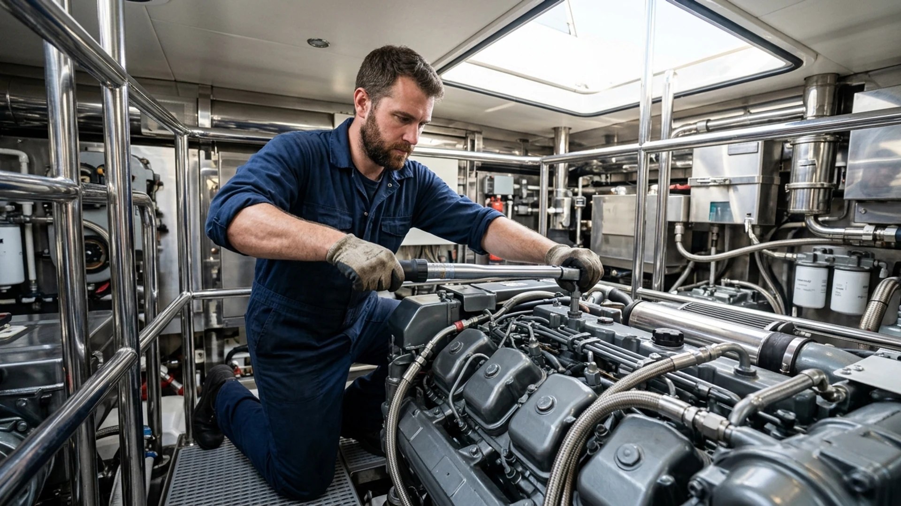

Planlı servis
Motor ve mekanik bakım
Teknenizin motor ve mekanik sistemleri için kontrollü bakım, cihazlı arıza tespiti ve onarım desteği.
Tüm Türkiye mobil marin servis ekibimizle motor ve mekanik bakım, marin jeneratör arıza tespiti, cihazlı hata tespiti ve periyodik tekne bakımı ihtiyaçlarınızda teknenizin yanındayız.

Atölye & sahada uzman servis
Motor sökümünden cihazlı teşhise, jeneratör bakımından elektrik sistemlerine kadar her işlemi ölçüm, kayıt ve doğru parça disipliniyle yürütüyoruz.
Hizmetlerimiz
Planlı bakım taleplerinden beklenmedik motor, jeneratör ve elektrik sorunlarına kadar süreci açık iletişim ve doğru müdahale ile yönetiyoruz.
Planlı servis
Teknenizin motor ve mekanik sistemleri için kontrollü bakım, cihazlı arıza tespiti ve onarım desteği.

Yerinde müdahale
Türkiye geneli ve Marmara merkezli ekibimizle teknenizin bulunduğu noktaya servis desteği.
Jeneratör sistemlerinde cihazlı arıza tespiti, periyodik bakım, onarım ve devreye alma desteği.
Şarj, akü, inverter, kontrol ve dağıtım sistemlerinde ölçüm odaklı teknik çözüm.
Marka, model ve seri numarasına göre uyum kontrolüyle doğru parçanın planlanması.
Motor, jeneratör ve yardımcı sistemlerin kontrollü bakımıyla kesintisiz seyir hazırlığı.
Cihazlı arıza tespiti & teknik analiz
Modern test ekipmanları ve saha deneyimimizle motor, jeneratör, elektrik ve elektronik sistemlerde sorunun kaynağını belirliyor; gereksiz parça değişiminin önüne geçerek kalıcı çözüm planlıyoruz.
Teknik destek isteyin →
“Doğru teşhis, güvenli ve kesintisiz seyir.”
Sahada DM MARİN
Bakım, teşhis, parça tedariği ve teslim sürecini tek merkezden yönetiyor; yapılan işlemleri şeffaf ve anlaşılır biçimde aktarıyoruz.

Kalamış, Fenerbahçe, Ataköy ve West İstanbul Marina başta olmak üzere teknenizin bağlı olduğu pontona tam donanımlı araçlarımızla geliyoruz.

Tuzla, Pendik Marintürk ve Marmara marinalarında ana makine, şanzıman, soğutma devreleri ve filtre değişimlerini orijinal standartlarda yürütüyoruz.

Kohler, Cummins Onan, alternatör ve akü gruplarında dijital ölçüm cihazlarıyla yük testi, voltaj regülasyonu ve arıza tespiti sağlıyoruz.

Tamamlanan her müdahale sonrası deniz testi, basılı/dijital servis formu ve parça dökümü ile teknenizi güvenle seyre hazır teslim ediyoruz.
Servis süreci
Arayarak, WhatsApp’tan yazarak veya formu doldurarak sorunu ve konumunuzu paylaşın.
Ekibimiz ihtiyacı netleştirir, gerekli hazırlığı ve servis planını sizinle paylaşır.
Planlanan bakım veya mobil müdahale teknenizin bulunduğu noktada gerçekleştirilir.
Son kontroller tamamlanır, yapılan işlemler açıklanır ve tekneniz teslim edilir.
Çok markalı özel servis
DM MARİN bağımsız özel servistir; listelenen markaların resmî yetkili servisi değildir.
Servis talebi
Bilgilerinizi doldurun; talebiniz doğrudan servis sistemimize kaydedilir. Dilerseniz talebinizi WhatsApp üzerinden de iletebilirsiniz.
Merak edilenler
Evet. İstanbul, Marmara Bölgesi ve Tüm Türkiye genelindeki marina ve bağlama noktalarına mobil servis ekibimizle hizmet veriyoruz.
Servis talebinizi 7/24 telefon veya WhatsApp üzerinden bırakabilirsiniz. Konum ve arıza bilgisine göre yönlendirme planlanır.
Evet. Jeneratörlerde cihazlı arıza tespiti, bakım, onarım ve uygun yedek parça desteği sağlıyoruz.
Marka, model ve seri numarası üzerinden parça uyumu kontrol edilir; uygunluk ve tedarik süresi paylaşılır.
Volvo Penta, MAN Marine, MTU, CAT, Yamaha, Yanmar, Nanni Diesel, Suzuki, Kubota, Mitsubishi, Onan, Kohler ve diğer listelenen markalara özel servis sağlıyoruz.
Hayır. DM MARİN, listelenen motor ve jeneratör markalarına hizmet veren bağımsız çok markalı özel servistir.
Motor ve jeneratör uzmanlığı
D4 ve D6 motor ailelerinde periyodik bakım, arıza tespiti ve mekanik onarım.
4JH ve 6LY motor ailelerinde bakım, soğutma temizliği ve teknik kontrol.
Marin jeneratörlerde arıza teşhisi, voltaj-frekans ayarı ve soğutma bakımı.
Onan marin dizel jeneratörlerinde kontrol paneli teşhisi ve mekanik servis.
V8 ve V12 deniz motorlarında bakım, yakıt-soğutma kontrolü ve arıza tespiti.
Series 2000 deniz motorlarında servis ihtiyacının teknik değerlendirmesi.
CAT marin motorlarında bakım, teşhis ve uygun parça planlaması.
Marin jeneratör sistemlerinde bakım, yük testi ve elektriksel arıza tespiti.
Model kapsamı motor seri numarası ve teknik özelliklere göre teyit edilir. DM MARİN bağımsız özel servistir; adı geçen markaların yetkili servisi değildir.
Mobil servis bölgesi
Setur Kalamış ve Fenerbahçe marinalarında pontonda motor arıza ve periyodik bakım.
Viaport Marina Tuzla ve tersaneler bölgesinde teknede marin jeneratör onarımı.
Marintürk İstanbul City Port marinasında tekne başında mobil mekanik destek.
Ataköy Marina ve çevresinde beklenmeyen arızalar için 7/24 mobil müdahale hattı.
Kalamış, Fenerbahçe ve Kadıköy rıhtımlarında planlı ve acil mobil servis.
Ataköy Marina ile West İstanbul Marina (Beylikdüzü) teknelerine mobil destek.
Viaport Marina Tuzla, Pendik Marintürk ve çevre tersane bölgelerine teknik servis.
Saha yönlendirmesi konum, arıza türü, ekip ve ulaşım uygunluğuna göre planlanır.
Detaylı servis rehberi